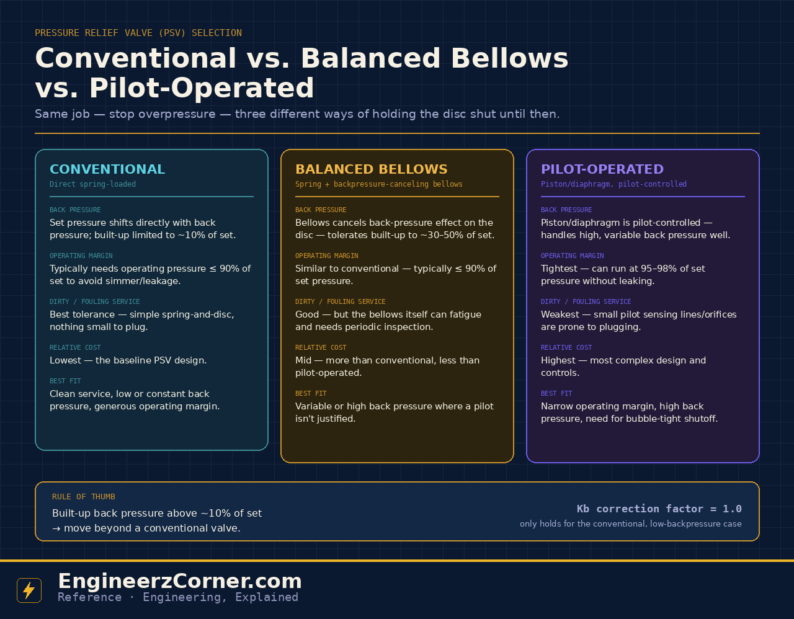

Every pressure relief valve (PRV/PSV) does one job: hold a disc shut against process pressure until it reaches the set pressure, then open fast and pass the required relieving capacity. What separates conventional, balanced bellows and pilot-operated designs is entirely in how that disc is held shut — and that mechanical difference is what decides how each one behaves against back pressure, how close to set pressure it can safely run, and how well it tolerates dirty service.

Conventional vs. balanced bellows vs. pilot-operated PSV — how each holds the disc shut, and where each one fits.
1. Conventional (direct spring-loaded)
The baseline design: a spring, compressed to the set pressure, sits directly opposed to the disc with the bonnet vented toward the discharge side. Because the bonnet sees the discharge pressure too, back pressure acts directly against the spring — a constant superimposed back pressure predictably shifts the effective set pressure, but built-up back pressure from the valve's own flow through the tailpipe generally has to stay under roughly 10% of set pressure before it starts causing instability, reduced capacity, or valve chatter.
Best fit: clean, low-viscosity service with low or constant back pressure and a generous margin between operating pressure and set pressure — it's the simplest, cheapest, and most fouling-tolerant of the three.
2. Balanced bellows
Add a bellows (or balanced piston) with the same effective area as the disc, vented to atmosphere or a closed vent system above the bonnet, and the back-pressure force on the top of the disc is largely cancelled out. That's what "balanced" means here: the valve's set pressure and capacity become largely independent of built-up back pressure, and it tolerates variable superimposed back pressure that a conventional valve can't handle — typically up to around 30–50% of set pressure, depending on the manufacturer's rating.
Trade-off: the bellows is a fatigue-prone component with a finite life and needs periodic inspection, and if it ruptures, process fluid can escape through the bonnet vent — so that vent needs to be routed safely for anything hazardous.
3. Pilot-operated
Here the main valve is a piston or diaphragm held closed by process pressure fed through a small external pilot that senses system pressure. Because a pilot actively controls the closing force rather than relying purely on a mechanical spring, a pilot-operated PRV can run much closer to set pressure — often 95–98% — without simmering or leaking, and its piston is inherently tolerant of high, variable back pressure.
Trade-off: the pilot's small sensing lines and orifices are the most vulnerable of the three designs to plugging from dirty, viscous, or polymerizing fluids, and the added complexity makes it the most expensive option — often reserved for services where the tight operating margin or backpressure tolerance genuinely earns its cost.
| Conventional | Balanced bellows | Pilot-operated | |
|---|---|---|---|
| Back pressure | Shifts set pressure directly | Cancelled by bellows | Handled by pilot/piston |
| Built-up back pressure limit | ~10% of set | ~30–50% of set | High, variable-tolerant |
| Operating margin | ≤ ~90% of set | ≤ ~90% of set | 95–98% of set |
| Dirty/fouling service | Best tolerance | Good, bellows can fatigue | Weakest — pilot can plug |
| Relative cost | Lowest | Mid | Highest |
Why this matters for sizing
A first-pass API 520 orifice sizing calculation uses a back-pressure correction factor, Kb. Assuming Kb = 1.0 is only valid for the conventional, low-back-pressure case — the moment built-up back pressure climbs past that ~10% guideline, or the valve is actually a balanced bellows or pilot-operated design, Kb has to come from the manufacturer's certified curve for that specific trim, not from the conventional default.
Quick understanding
Both rely on a mechanical spring to hold the disc shut. The bellows just adds a second area that cancels out back pressure's effect on that spring balance.
A separate pilot senses pressure and actively loads the main valve, allowing a much tighter operating margin — at the cost of small, fouling-prone sensing passages.
None of the three is universally "better" — the right choice depends on which constraint actually governs the service: back pressure, operating margin, or fluid cleanliness.
Key takeaways
- ✓Conventional PRVs are simplest and cheapest but limited to roughly 10% built-up back pressure and a generous operating margin.
- ✓Balanced bellows PRVs cancel back-pressure effects on the disc, tolerating built-up back pressure up to roughly 30–50% of set.
- ✓Pilot-operated PRVs allow the tightest operating margin (95–98% of set) and handle high, variable back pressure — but foul most easily.
- ✓The Kb = 1.0 assumption in a preliminary orifice sizing calc only holds for the conventional, low-back-pressure case.
- ✓Final selection always goes through the manufacturer's certified sizing software or a full API 520/521 calculation.